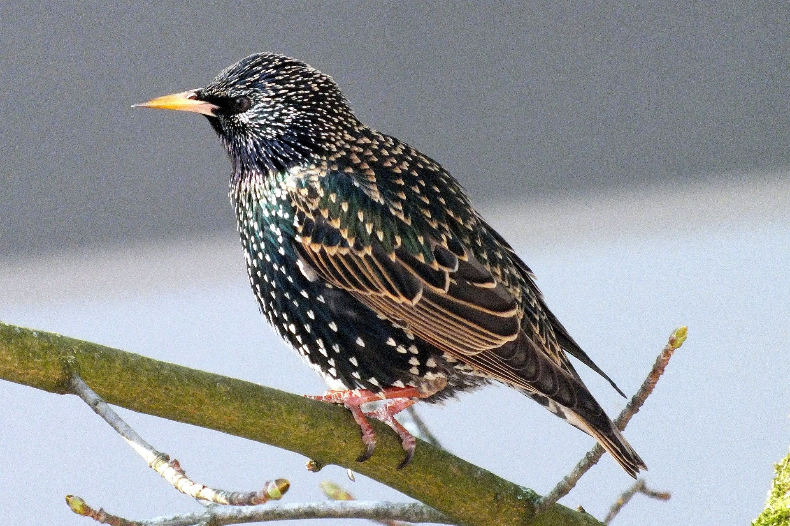
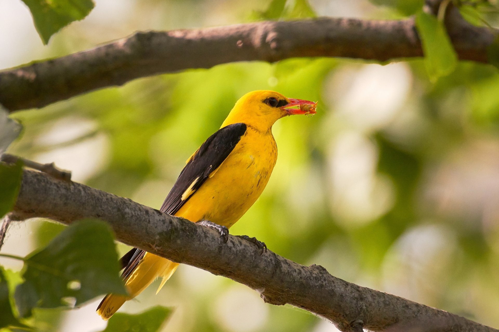
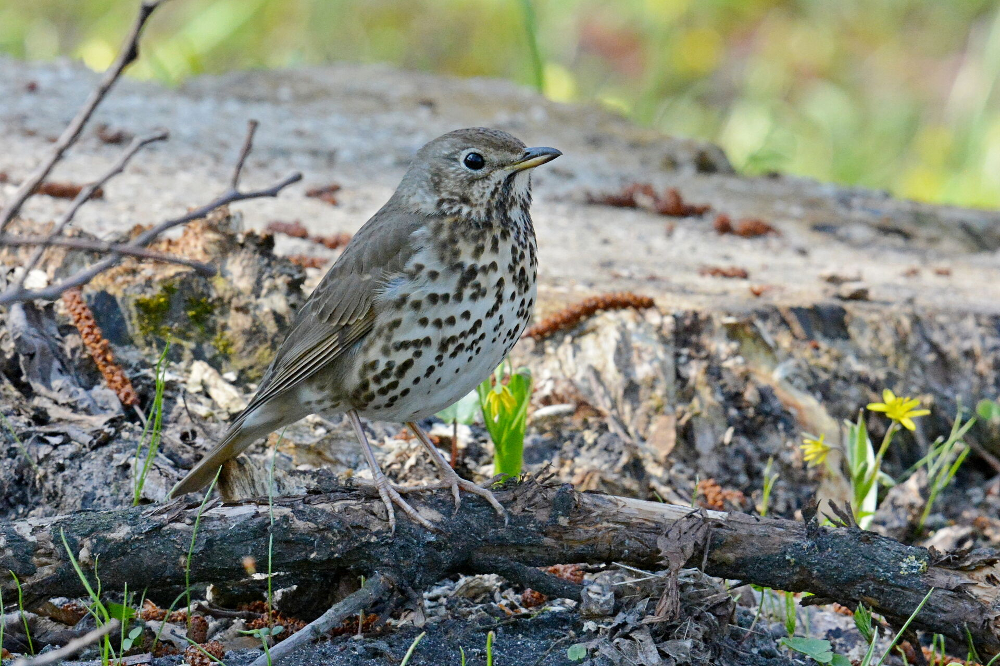
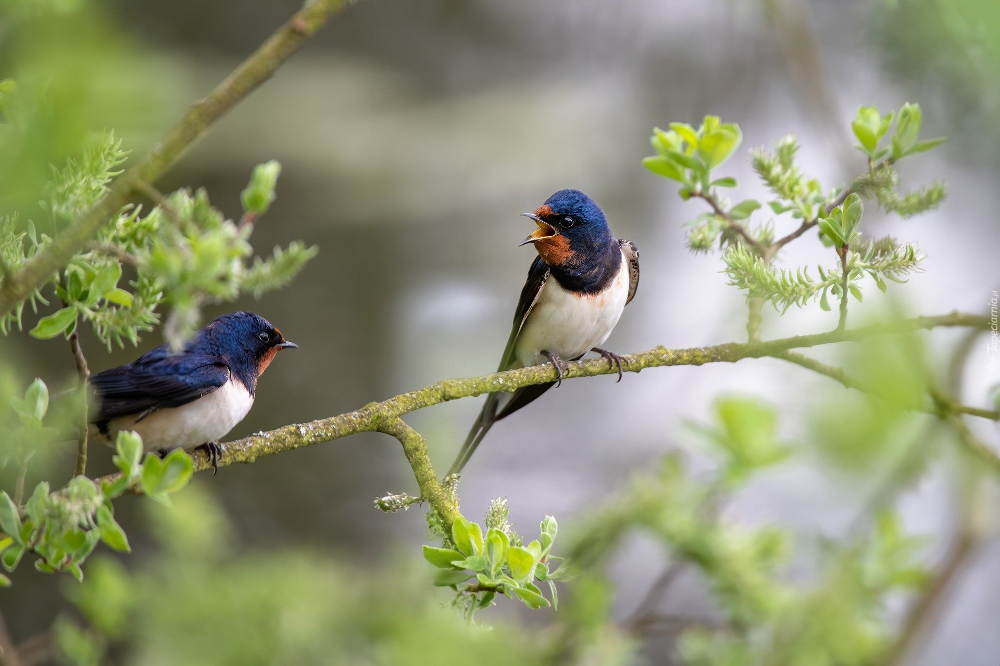

Gil to ptak z rodziny łuszczakowatych, rozpoznawalny dzięki swojemu czerwono-pomarańczowemu brzuszkowi i czarnej głowie. Występuje w Europie i Azji, a jego charakterystyczny wygląd czyni go jednym z bardziej rozpoznawalnych ptaków w Polsce.
Szpak

Szpak
Szpak to średniej wielkości ptak o metalicznie błyszczących, czarnych piórach. Znany jest ze swojej zdolności do naśladowania różnych dźwięków, w tym śpiewu innych ptaków. Żyje w stadach i często migruje.
Wilga

Wilga
Wilga to jaskrawo ubarwiony ptak, którego samiec ma żółte pióra i czarne skrzydła. Występuje w lasach liściastych i parkach Europy i Azji. Jej melodyjny śpiew jest charakterystyczny, szczególnie w okresie wiosenno-letnim.
Śpiewak

Śpiewak
Śpiewak to ptak z rodziny drozdowatych, znany z pięknego, melodyjnego śpiewu, który często słyszy się w lasach i parkach. Ma brązowe upierzenie z plamkami na piersi. Występuje w Europie i zachodniej Azji.
Jaskółka

Jaskółka
Jaskółka to ptak o smukłym ciele, długich skrzydłach i rozwidlonym ogonie. Często widuje się ją w locie, gdy poluje na owady. Jaskółki są ptakami wędrownymi, które wracają do Europy na wiosnę, a zimę spędzają w Afryce.